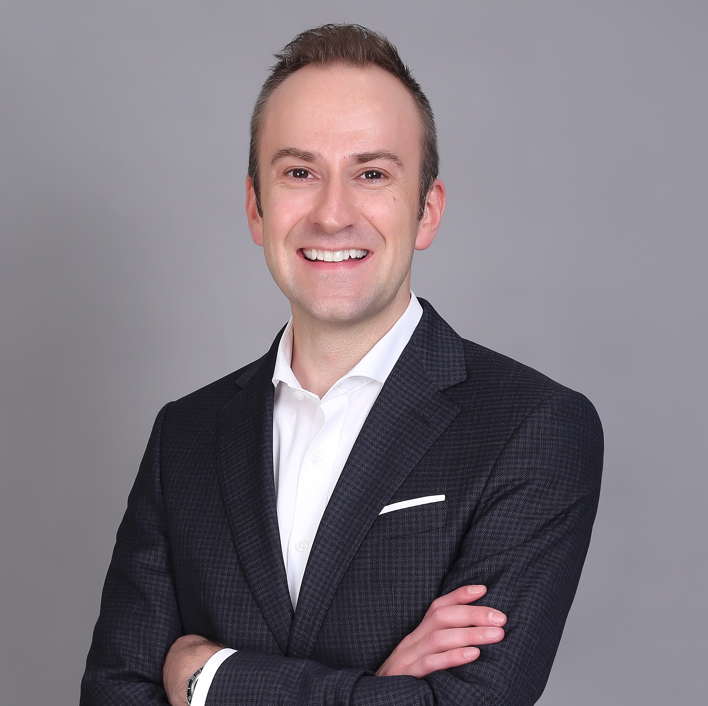

Redefining Procurement Advisory
Founded by procurement experts who recognized a better way to serve clients, delivering superior expertise without the overhead.
Vantixe Advisory was established at the beginning of 2025 by procurement advisory leaders who spent decades building and scaling practices at KPMG, GEP, and other leading consultancies. After years of delivering transformational results for Fortune 500 companies, our founding team recognized a fundamental inefficiency in the consulting model.
Traditional consulting firms -the Big Four and major strategy houses- require clients to pay premium fees that fund large overheads, expensive real estate, and armies of junior consultants learning on client time. Meanwhile, senior experts who deliver the real value spend limited time on each engagement, often appearing for a day or two per week while junior staff do the heavy lifting.
Vantixe was founded on a simple but powerful premise: clients deserve better. They deserve direct access to senior specialists. They deserve to pay for expertise, not overhead. And they deserve a consulting model built for the modern era.
Vantixe operates on three core principles that differentiate us from traditional consulting firms.
Every member of your Vantixe team is a procurement specialist with real-world experience. No junior consultants. No MBA graduates learning the basics of procurement on your project.
Our specialists have spent years, often decades, working in procurement, whether in advisory roles at Big Four firms or in leadership positions within corporate procurement organizations. When you work with Vantixe, you're working with experts from day one.
The COVID-19 pandemic proved definitively that remote work and virtual collaboration are effective, efficient, and often preferable to traditional office-based models. Vantixe embraces this reality.
We maintain a deliberately lean structure with minimal overhead. No expensive office towers. No bloated back-office teams. No layers of bureaucracy. This means your consulting fees go directly to expertise and delivery.
Artificial intelligence has fundamentally changed consulting economics. Tasks that once required teams of junior consultants, like data gathering, analysis, research, slide drafting, quality checking, can now be handled by AI tools with greater speed and accuracy.
At Vantixe, our senior specialists leverage AI to amplify their impact. This allows them to spend more time on what matters: strategic thinking, expert judgment, client collaboration, and driving real business outcomes. The result is faster delivery, higher quality, and lower costs.
Every decision we make starts with one question: what's best for our clients? Not what maximizes our fees, but what delivers the most value.
We believe in the power of deep, specialized knowledge. Our team comprises procurement experts who have spent years mastering their craft.
We embrace new tools, technologies, and approaches that enhance our delivery and create better outcomes for clients.
We view our client relationships as true partnerships, working collaboratively to achieve sustainable, transformational results.
Our pricing is straightforward and fair. You pay for the expertise you receive, not for overhead you don't need.
We measure our success by your success. Delivering measurable, sustainable business impact is our ultimate goal.

Founder & Managing Director
Former KPMG Partner | Ex-GEP North Asia Leader
Michael founded Vantixe Advisory to create a better model for procurement consulting: one that prioritizes client value over consulting firm economics. With 18 years of experience in procurement advisory, Michael has built and led some of the region's most successful procurement practices.
KPMG (Partner, Procurement Advisory): As a Partner at KPMG, Michael built and led the procurement advisory service line across Greater China. Under his leadership, the practice grew from inception to become one of the firm's leading service lines, delivering major transformations for Fortune 500 companies and regional enterprises across industries.
GEP (North Asia Leader): Most recently, Michael led GEP's North Asia operations, overseeing consulting services, managed services, and procurement technology across the region. He was responsible for a diverse portfolio spanning advisory engagements, Procurement Managed Services, and technology implementations.
Throughout his career, Michael has worked with clients across industries including utilities, public services, manufacturing, retail, healthcare, financial services, technology, consumer goods, and entertainment. His expertise spans the full spectrum of procurement: from strategic transformation and operating model design to category strategy, supplier management, digital procurement, and capability building.
Michael has deep expertise across Hong Kong, Chinese Mainland and Asia-Pacific markets. He is a frequent speaker at procurement conferences, known for practical, forward-thinking insights on transformation and innovation. This regional depth and thought leadership enables Vantixe to connect clients with valuable partners and bring proven, innovative approaches to every engagement.
Let's discuss how our specialist-led approach can deliver transformational results for your procurement function.
Book a Meeting